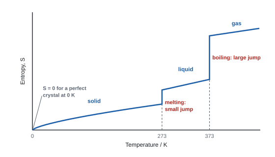
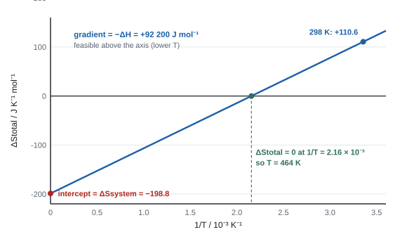
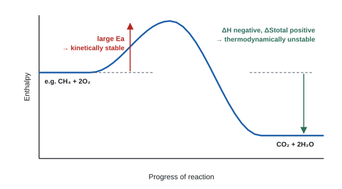
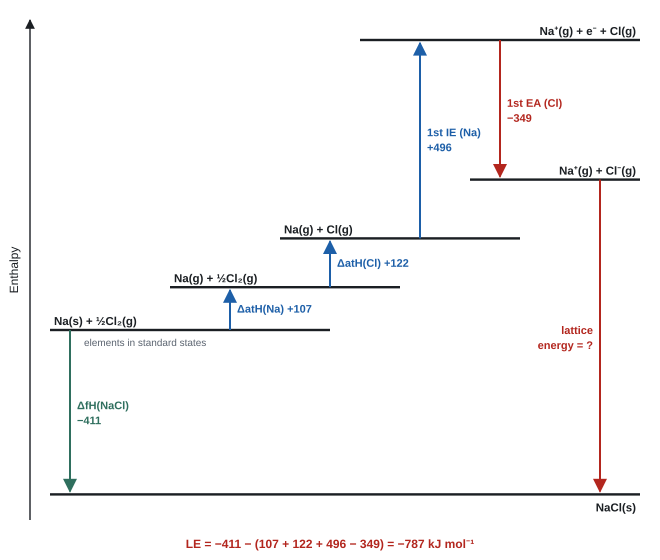
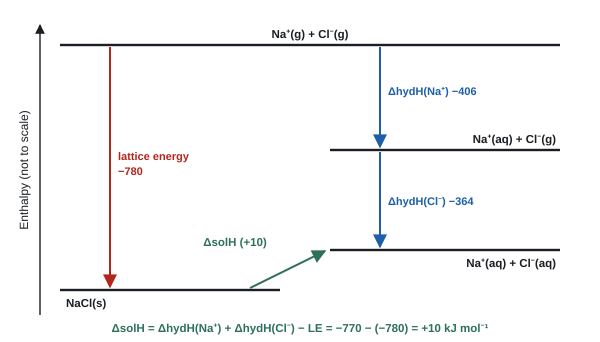

Entropy and energetics
Why does sodium chloride exist, why is it CaCl2 and not CaCl, and why do some reactions that take in heat still happen by themselves? This topic answers with two tools: Born–Haber and solution cycles, which measure the energy holding ionic solids together, and entropy, which counts the ways energy can be shared out and decides whether a change is feasible at all.
Spec12.1Enthalpy alone doesn't decide whether a reaction happens
Understand that, because some endothermic reactions happen on their own at room temperature, the enthalpy change can't be the only thing that controls whether a reaction occurs.
Endothermic but spontaneous
If "downhill in enthalpy" were the whole story, no endothermic change could ever happen by itself. Plenty do:
| Change | What you see | Why it can happen |
|---|---|---|
| Ammonium nitrate dissolving in water (cold packs) | solution gets cold | solid lattice → free ions in solution |
| Ba(OH)₂·8H₂O(s) + 2NH₄Cl(s) → BaCl₂ + 2NH₃(g) + 10H₂O(l) | gets so cold that water freezes the flask to a wet block | 3 moles of solid → 13 moles, including a gas and a liquid |
| 2CH₃COOH + (NH₄)₂CO₃ → 2CH₃COONH₄ + H₂O + CO₂(g) | fizzes and cools | a gas is made |
| Ice melting above 0 °C | solid → liquid |
What these have in common: the products are more disordered than the reactants (more particles, more freedom of movement, gases formed). The extra quantity that decides the direction of change is entropy (12.2).
- Feasible (spontaneous) means a change can happen without a continuous input of energy from outside. It says nothing about how fast (12.11).
- "ΔSsystem must be positive"; "(as the compound does dissolve) ΔStotal is > 0"; "TΔSsystem larger than ΔH" also allowed (WCH14 Jun 2021 Q15).
- Endothermic reaction of solids that makes a gas: "moles increase from 4 to 7" and "a gas (and liquid products) are produced (from solids)". Give both reasons (WCH14 Jan 2025 Q19).
Often asked as: explain why an endothermic dissolving or reaction is feasible; MCQ on which statement explains an endothermic change.
Saying ΔSsurroundings is positive for an endothermic change. Heat is taken from the surroundings, so ΔSsurroundings is negative; it's the system's entropy that makes up for it.
Spec12.2Entropy: dispersal of particles and energy
Understand entropy, S, as a measure of the disorder of a system: the random spreading out of molecules and of quanta of energy among them.
What entropy measures
- Entropy (S) measures disorder: the number of ways the particles can be arranged and the energy can be shared out among them.
- Energy in molecules comes in fixed packets (quanta). The more particles there are, and the more freely they move, the more ways there are to share the quanta. The more ways there are, the more likely that state is, and the higher its entropy.
- Units: J K⁻¹ mol⁻¹ (note: joules, not kilojoules).
Counting ways: a feel for it
Share 3 identical quanta between particles:
| Particles | Possible shares | Number of ways |
|---|---|---|
| 2 | (3,0) (2,1) (1,2) (0,3) | 4 |
| 3 | (3,0,0) (0,3,0) (0,0,3) (2,1,0) (2,0,1) (1,2,0) (0,2,1) (1,0,2) (0,1,2) (1,1,1) | 10 |
Add one particle and the number of ways more than doubles. With real numbers of particles (10²³) the number of ways is astronomically large, so a system almost always ends up in the arrangement with the most ways: the most disordered one.
Two ideas earn the mark: disorder (arrangement of particles) and the number of ways of distributing energy quanta. Use either, but tie it to the specific change (e.g. "fewer moles of gas, so fewer ways of distributing energy").
- "disorder / number of ways of distributing energy quanta decreases as the number of molecules (of gas) decreases". DO NOT AWARD just "ΔSsystem is negative" (WCH14 Oct 2020 Q19).
- "a measure of the number of ways that energy can be distributed or particles arranged" (examiner report, Jun 2024).
- "moles (decrease) from 5 to 3", "decrease in disorder" (WCH14 Jun 2024 Q15).
Often asked as: explain the sign of ΔSsystem in words; MCQ ordering entropies.
Examined in past papers even though the spec doesn't list it.
- Boltzmann's equation S = k ln W (W = number of ways) is a neat summary but isn't required. The number-of-ways wording is rewarded (examiner report, Jun 2024).
Talking only about physical states when the question is about a change in the number of moles of gas (examiner report, Jun 2024).
Spec12.3How entropy depends on temperature and state
Know that a substance's entropy increases with temperature, increases from solid → liquid → gas, and that a perfect crystal at 0 K has zero entropy.

- 0 K, perfect crystal: S = 0. Every particle is fixed in a perfect lattice and there's no energy to share, so there is only one possible arrangement.
- Heating a substance gives its particles more energy quanta to share, so S rises gradually.
- Melting: particles go from fixed positions to moving past each other: a small jump in S.
- Boiling: particles become completely free and far apart: a big jump in S. So S(gas) ≫ S(liquid) > S(solid).
Comparing entropies without data
- State first: gas ≫ liquid > solid.
- Same state: more atoms per molecule (more complex) → more ways to store energy (rotating, vibrating) → higher S. Heavier particles also tend to have higher S.
- Hard, strongly bonded solids (diamond) have very low S; softer solids higher.
| Substance | S⦵ / J K⁻¹ mol⁻¹ |
|---|---|
| C(s, diamond) | 2.4 |
| C(s, graphite) | 5.7 |
| Mg(s) | 32.7 |
| NaCl(s) | 72.1 |
| H₂O(l) | 69.9 |
| Br₂(l) | 152.2 |
| H₂O(g) | 188.7 |
| O₂(g) | 205.0 |
| CO₂(g) | 213.6 |
| Br₂(g) | 245.4 |
- Sketch S against T: "general shape of increase from left to right" (a straight line is allowed); "two vertical stages for melting and boiling"; mark 273 K and 373 K for water (WCH14 Jun 2021 Q20).
- Ordering: larger, more complex gas molecules have more entropy than simple gases; a liquid metal such as Hg has less than most gases (WCH14 Jan 2025 Q14).
Often asked as: sketch S against T; MCQ ordering substances by entropy (e.g. Os < Hg < He < O₂).
Saying elements have zero entropy, by analogy with ΔfH. Only a perfect crystal at 0 K has S = 0; every substance at 298 K has a positive S.
Spec12.4The natural direction of change: total entropy increases
Interpret the natural direction of change as the direction in which total entropy increases (ΔStotal positive), including gases spreading through a room.
- Left alone, changes go the way that increases the total entropy (system + surroundings). That is the second law of thermodynamics in Unit 4 language.
- Gas spreading: open a jar of bromine in a room. Bromine molecules spread until they fill the room evenly. They never gather back into the jar, because the spread-out state has vastly more arrangements.
- One molecule: chance of finding it in the original half of a container = ½.
- N molecules: chance of finding them all there = (½)N. For N = 100 that is about 10⁻³⁰; for a mole, effectively zero.
- Heat flows from hot to cold for the same reason: the energy quanta become spread over more particles.
- Feasible means ΔStotal > 0. At equilibrium the total entropy of the mixture is at its maximum and nothing further changes overall (13.8).
- "chemical reactions are feasible when ΔStotal is positive" (WCH14 Jan 2026 Q17).
Often asked as: the opening point of a feasibility answer; rarely asked on its own.
Saying a reaction happens because "the system's entropy increases". The test is the total entropy.
Spec12.5Entropy changes: changes of state, dissolving and changing numbers of moles
Explain why entropy changes during (i) changes of state, (ii) dissolving a solid ionic lattice, (iii) reactions where the number of moles changes from reactants to products.
(i) Changes of state
| Change | ΔSsystem | Why |
|---|---|---|
| melting, boiling, subliming | positive | particles gain freedom; boiling gives the biggest increase |
| freezing, condensing | negative | particles become more ordered |
(ii) Dissolving an ionic solid
Two effects pull in opposite directions:
- The lattice breaks up: ions go from fixed positions to moving freely in solution → entropy increases.
- Water molecules become ordered round each ion (hydration shells) → entropy decreases. This effect is biggest for small, highly charged ions (Mg²⁺, Al³⁺), which hold water tightly.
So ΔSsystem for dissolving is usually positive (e.g. about +43 J K⁻¹ mol⁻¹ for NaCl, +109 for NH₄NO₃) but can be negative (about −115 for MgCl₂). Don't assume the sign.
(iii) Changes in the number of moles
- More moles of gas in the products → ΔSsystem positive and large.
- Fewer moles of gas → negative. N₂(g) + 3H₂(g) → 2NH₃(g): 4 moles of gas → 2, so ΔSsystem is negative (−199 J K⁻¹ mol⁻¹).
- With no gases, count all moles, and look at state changes: Ba(OH)₂·8H₂O(s) + 2NH₄Cl(s) → BaCl₂(s) + 2NH₃(g) + 10H₂O(l) goes from 3 moles of solid to 13 moles, including a gas.
Predict the sign in this order: (1) any change in moles of gas? That dominates. (2) Any solid → liquid or solution? (3) Then total moles.
- "1 mole of reactant becomes 7 moles of products (and more moles have higher entropy)" OR "a solid becomes (a solid and) a liquid (and liquids have higher entropy than solids)" (WCH14 Oct 2025 Q9). "mols / molecules / particles" are all allowed.
- "one molecule (of reactant) forms two molecules (of product) in reaction 1"; "no change in the number of molecules in reaction 2" (WCH14 Oct 2022 Q17).
Often asked as: predict and explain the sign of ΔSsystem with no data; explain why solids don't react but their solutions do.
Examined in past papers even though the spec doesn't list it.
- Why a mixture of two ionic solids doesn't react but their solutions do: "in solids the particles are fixed in a lattice (so unable to move)", "so they cannot collide and react", "but when dissolved the particles are mobile" (WCH14 Jan 2025 Q19). This is AS collision theory applied here.
Vague "it's more disordered" answers. Count the molecules or name the change of state.
Spec12.6Total entropy change = system + surroundings
Know that the total entropy change of a reaction is the sum of the entropy change of the system and that of the surroundings: ΔStotal = ΔSsystem + ΔSsurroundings.
Entropy change of the surroundings and total entropy change
ΔStotal = ΔSsystem + ΔSsurroundings
- System = the reacting chemicals. ΔSsystem comes from the entropies of products and reactants (12.7).
- Surroundings = everything else (the solvent, flask, air). ΔSsurroundings comes from the heat the reaction gives out or takes in (12.8).
- Only ΔStotal decides feasibility: positive means feasible.
| Exothermic or endothermic? | ΔSsurroundings |
|---|---|
| Exothermic (ΔH < 0): heat goes into the surroundings | positive |
| Endothermic (ΔH > 0): heat comes out of the surroundings | negative |
- "ΔStotal = ΔSsystem + ΔSsurroundings and ΔSsurroundings = −ΔH ÷ T" (WCH14 Jan 2026 Q17).
Often asked as: the first indicative point in a feasibility 6-mark answer.
Adding ΔSsystem in J K⁻¹ mol⁻¹ to ΔSsurroundings in kJ K⁻¹ mol⁻¹. Put both in J K⁻¹ mol⁻¹ before adding.
Spec12.7Calculating ΔSsystem
Calculate the entropy change of the system for a reaction from the entropies of the reactants and products.
Entropy change of the system
ΔSsystem = ΣS(products) − ΣS(reactants)
- Multiply each S value by its number of moles in the equation.
- Elements have non-zero entropies: include them.
- Use the value for the right state (H₂O(l) 69.9, H₂O(g) 188.7).
- Units J K⁻¹ mol⁻¹, with a sign.
Worked example: three reactions
Haber process: N₂(g) + 3H₂(g) → 2NH₃(g)
S: N₂ 191.6, H₂ 130.6, NH₃ 192.3 J K⁻¹ mol⁻¹
ΔSsystem = (2 × 192.3) − (191.6 + 3 × 130.6) = 384.6 − 583.4 = −198.8 J K⁻¹ mol⁻¹ (4 mol gas → 2 mol gas)
Decomposing limestone: CaCO₃(s) → CaO(s) + CO₂(g)
S: CaCO₃ 92.9, CaO 39.7, CO₂ 213.6
ΔSsystem = (39.7 + 213.6) − 92.9 = +160.4 J K⁻¹ mol⁻¹ (a gas is made)
Burning magnesium: 2Mg(s) + O₂(g) → 2MgO(s)
S: Mg 32.7, O₂ 205.0, MgO 26.9
ΔSsystem = (2 × 26.9) − (2 × 32.7 + 205.0) = 53.8 − 270.4 = −216.6 J K⁻¹ mol⁻¹ (a gas is used up)
Data / J K−1 mol−1: S⦵[N2(g)] = 191.6; S⦵[H2(g)] = 130.6; S⦵[NH3(g)] = 192.3.
Products: 2 × 192.3 = 384.6. Reactants: 191.6 + 3 × 130.6 = 583.4.
Negative, as predicted: four moles of gas become two.
- "Σ entropy of products − Σ entropy of reactants" with values substituted, e.g. (109.2 + 6 × 69.9) − 343 = +185.6 J K⁻¹ mol⁻¹ (WCH14 Oct 2025 Q9).
- Sign and units J K⁻¹ mol⁻¹. "Penalise incorrect units once only."
Often asked as: in almost every paper, as the first part of a ΔStotal or feasibility-temperature calculation.
Examined in past papers even though the spec doesn't list it.
- Working backwards to the S value of one substance from a given ΔSsystem (WCH14 Jan 2022 Q22).
- Finding ΔSsystem from ΔStotal − ΔSsurroundings (WCH14 Oct 2020 Q19).
Forgetting to multiply by 2 or 3. Subtracting products from reactants. Quoting 4 or more SF when the data are to 3 or 4 SF.
Spec12.8ΔSsurroundings = −ΔH/T, and ΔStotal
Calculate the entropy change of the surroundings using ΔSsurroundings = −ΔH/T, and hence ΔStotal.
ΔSsurroundings = −ΔH ÷ T
- ΔH must be in J mol⁻¹ (multiply kJ by 1000). T in kelvin (°C + 273).
- The minus sign: an exothermic reaction (ΔH negative) gives heat to the surroundings, so their entropy rises.
- Dividing by T: the same amount of heat makes a bigger difference to cold surroundings than to hot ones, which are already highly disordered. (Like a shout in a quiet library compared with a busy street.)
Worked example: ΔStotal for the Haber process at 298 K
N₂(g) + 3H₂(g) → 2NH₃(g); ΔH = −92.2 kJ mol⁻¹; ΔSsystem = −198.8 J K⁻¹ mol⁻¹
ΔSsurroundings = −ΔH ÷ T = −(−92 200) ÷ 298 = +309.4 J K⁻¹ mol⁻¹
ΔStotal = −198.8 + 309.4 = +110.6 J K⁻¹ mol⁻¹
Positive, so the reaction is feasible at 298 K (although it is extremely slow without a catalyst).
Worked example: ΔStotal for burning magnesium
2Mg(s) + O₂(g) → 2MgO(s); ΔH = −1203.4 kJ mol⁻¹; ΔSsystem = −216.6 J K⁻¹ mol⁻¹
ΔSsurroundings = +1 203 400 ÷ 298 = +4038 J K⁻¹ mol⁻¹
ΔStotal = −216.6 + 4038 = +3822 J K⁻¹ mol⁻¹: hugely positive, so feasible.
Worked example: back to ΔH
An endothermic reaction at 298 K has ΔSsurroundings = −234.9 J K⁻¹ mol⁻¹. Find ΔH.
ΔH = −T × ΔSsurroundings = −298 × (−234.9) = +70 000 J mol⁻¹ = +70.0 kJ mol⁻¹
- "= −(−631.3 × 10³) ÷ 298 = +2118.5 J K⁻¹ mol⁻¹" (WCH14 Jan 2020 Q19): the kJ → J conversion and K are both checked.
- Temperature in °C must be converted, e.g. 23.0 + 273 = 296 K (WCH14 Jun 2024 Q15).
- Sign and units required, e.g. −295.64 J K⁻¹ mol⁻¹ or −0.29564 kJ K⁻¹ mol⁻¹ (WCH14 Oct 2025 Q9).
Often asked as: calculate ΔSsurroundings and ΔStotal and comment on feasibility; work backwards to ΔH.
Examined in past papers even though the spec doesn't list it.
- ΔStotal against 1/T graph. ΔStotal = ΔSsystem − ΔH × (1/T), a straight line: gradient = −ΔH, intercept = ΔSsystem, and where the line crosses ΔStotal = 0 gives the temperature at which feasibility changes (WCH14 Jan 2022 Q22).
- Back-calculating ΔH = −ΔSsurroundings × T (WCH14 Jan 2025 Q19).

The top three: forgetting ×1000; dropping the minus sign (especially when ΔH is already negative: −(−) = +); using °C.
Spec12.9Feasibility: balancing the entropy terms, and the effect of temperature
Understand that whether a reaction is feasible depends on (i) the balance between ΔSsystem and ΔSsurroundings, so even endothermic reactions can be spontaneous, and (ii) temperature, because a higher temperature makes ΔSsurroundings smaller in magnitude. Calculate the temperature at which a reaction becomes feasible. (ΔG = ΔH − TΔSsystem may be used but isn't required.)
The four combinations
ΔSsystem hardly changes with temperature (unless something changes state), and neither does ΔH. Only the ΔSsurroundings term, −ΔH/T, changes, and it gets smaller in size as T rises.
| ΔH | ΔSsystem | ΔSsurroundings | Feasible? |
|---|---|---|---|
| negative (exo) | positive | positive | always: both terms positive |
| negative (exo) | negative | positive | at low T, while −ΔH/T is bigger than the size of ΔSsystem |
| positive (endo) | positive | negative | at high T, once ΔSsystem outweighs ΔH/T |
| positive (endo) | negative | negative | never: both terms negative |
Temperature at which feasibility changes
Set ΔStotal = 0: ΔSsystem − ΔH/T = 0, so T = ΔH ÷ ΔSsystem (ΔH in J mol⁻¹).
Worked example: decomposing calcium carbonate
CaCO₃(s) → CaO(s) + CO₂(g); ΔH = +178 kJ mol⁻¹; ΔSsystem = +160.4 J K⁻¹ mol⁻¹
At 298 K: ΔSsurroundings = −178 000 ÷ 298 = −597.3; ΔStotal = 160.4 − 597.3 = −436.9 J K⁻¹ mol⁻¹: not feasible.
Feasible when ΔStotal ≥ 0: T = 178 000 ÷ 160.4 = 1110 K (about 837 °C). Above this, CaCO₃ decomposes: this is why a lime kiln runs at over 900 °C.
Worked example: the Haber process
ΔH = −92.2 kJ mol⁻¹, ΔSsystem = −198.8 J K⁻¹ mol⁻¹: exothermic with a negative ΔSsystem.
T = −92 200 ÷ −198.8 = 464 K. The reaction is feasible below 464 K. The industrial plant runs at about 700 K for rate, so ΔStotal there is negative and the equilibrium yield is low: that is the compromise (13.4, 13.8).
Using ΔG instead (allowed, not required)
ΔG = ΔH − TΔSsystem, and ΔG = −TΔStotal. A reaction is feasible when ΔG is negative (ΔStotal positive). Setting ΔG = 0 gives the same T = ΔH/ΔSsystem.
CaCO3(s) → CaO(s) + CO2(g). Data: ΔfH / kJ mol−1: CaCO3 −1206.9, CaO −635.1, CO2 −393.5. S⦵ / J K−1 mol−1: CaCO3 92.9, CaO 39.7, CO2 213.6.
Enthalpy change: ΔH = (−635.1 − 393.5) − (−1206.9) = +178.3 kJ mol−1.
Entropy change of the system: ΔSsystem = (39.7 + 213.6) − 92.9 = +160.4 J K−1 mol−1.
Positive, because a gas is made from a solid.
Entropy change of the surroundings at 298 K, converting ΔH to J mol−1:
\[ \Delta S_\text{surroundings} = -\frac{178\,300}{298} = -598.3\ \mathrm{J\,K^{-1}\,mol^{-1}} \]Total:
\[ \Delta S_\text{total} = +160.4 + (-598.3) = -437.9\ \mathrm{J\,K^{-1}\,mol^{-1}} \]Negative, so limestone does not decompose at room temperature.
At what temperature does it become feasible? At the boundary ΔStotal = 0, so ΔSsystem = ΔH/T:
\[ T = \frac{\Delta H}{\Delta S_\text{system}} = \frac{178\,300}{160.4} = 1110\ \mathrm{K} \]Above about 1110 K (840 °C), ΔSsurroundings is small enough for the positive ΔSsystem to win. Lime kilns run hotter than this.
Start from the total entropy change:
\[ \Delta S_\text{total} = \Delta S_\text{system} - \frac{\Delta H}{T} \]Multiply every term by −T:
\[ -T\Delta S_\text{total} = \Delta H - T\Delta S_\text{system} \]Define the right-hand side as the Gibbs energy change:
\[ \Delta G = \Delta H - T\Delta S_\text{system} = -T\Delta S_\text{total} \]Because T is always positive, ΔG is negative exactly when ΔStotal is positive.
Gibbs energy change
ΔH = +178.3 kJ mol−1 and ΔSsystem = +160.4 J K−1 mol−1 = +0.1604 kJ K−1 mol−1.
At 298 K:
\[ \Delta G = 178.3 - 298 \times 0.1604 = +130.5\ \mathrm{kJ\,mol^{-1}} \]Positive: not feasible, as the entropy calculation showed.
At 1200 K:
\[ \Delta G = 178.3 - 1200 \times 0.1604 = -14.2\ \mathrm{kJ\,mol^{-1}} \]Negative: feasible at kiln temperatures.
- Feasibility 6-mark (WCH14 Jan 2026 Q17): exothermic + positive ΔSsystem: always feasible; exothermic + negative ΔSsystem: feasible only if −ΔH/T > |ΔSsystem|; endothermic + positive ΔSsystem: feasible only if ΔSsystem > ΔH/T; endothermic + negative: never feasible. The ΔG route is allowed throughout.
- Always feasible: "ΔSsurroundings and ΔSsystem are (both) positive so ΔStotal will always be positive". Answers mentioning only ΔStotal or only ΔSsurroundings scored zero (WCH14 Jun 2022).
- Higher T: "ΔSsurroundings will decrease (become less positive); ΔSsystem does not change (significantly); so ΔStotal decreases".
- T = ΔH ÷ ΔSsystem = 88 100 ÷ 185.6 = 474.68 K (WCH14 Oct 2025 Q9).
Often asked as: minimum temperature for feasibility (most papers); why feasible at all temperatures; why a higher temperature lowers ΔStotal; 6-mark on the four combinations; Haber temperature as a compromise.
Examined in past papers even though the spec doesn't list it.
- "Justify" a plant temperature means using the entropy/yield data, not reciting collision theory (examiner report, Jan 2020).
- A feasibility temperature that's impractically high: "the temperature required is too high" (WCH14 Oct 2023 Q16).
- If ΔH is close to zero, ΔSsurroundings hardly changes with T, so feasibility (and K) barely change (WCH14 Jan 2024 Q19).
Writing "ΔSsurroundings gets bigger/smaller" without saying "more positive" or "less negative". Be precise about signs.
Bullet lists in the 6-mark question: link the points in sentences.
Mixing J and kJ in T = ΔH ÷ ΔSsystem.
Spec12.10A reaction can go even if one entropy term is negative
Understand that a reaction can happen as long as ΔStotal is positive, even if ΔSsystem or ΔSsurroundings is negative.
- What matters is the sum. Compare the sizes of the two terms.
- ΔSsystem negative, ΔSsurroundings positive and bigger: burning magnesium (−216.6 + 4038 = +3822); the Haber process at 298 K (−198.8 + 309.4 = +110.6); freezing water below 0 °C.
- ΔSsurroundings negative, ΔSsystem positive and bigger: dissolving ammonium nitrate at 298 K:
Worked example: an endothermic change that happens
NH₄NO₃(s) → NH₄⁺(aq) + NO₃⁻(aq); ΔsolH = +25.7 kJ mol⁻¹; ΔSsystem = +108.7 J K⁻¹ mol⁻¹
ΔSsurroundings = −25 700 ÷ 298 = −86.2 J K⁻¹ mol⁻¹
ΔStotal = 108.7 − 86.2 = +22.5 J K⁻¹ mol⁻¹ → feasible, so ammonium nitrate dissolves even though the water gets cold.
- The verdict is "ΔStotal is positive (so the reaction is feasible)", backed by the numbers (WCH14 Jan 2020 Q19: ΔSsystem −337.8, ΔSsurroundings +2118.5).
Often asked as: part of 12.8/12.9 calculations, ending "comment on your answer".
Concluding "not feasible" because ΔSsystem is negative. Always finish with ΔStotal.
Forgetting that "feasible" doesn't mean "fast": if asked why a feasible reaction doesn't happen, talk about activation energy (12.11).
Spec12.11Thermodynamic stability and kinetic stability
Understand and tell apart thermodynamic stability and kinetic stability.
| Thermodynamic stability | Kinetic stability | |
|---|---|---|
| Question it answers | Can it react? (Which way is "downhill" overall?) | How fast will it react? |
| Decided by | ΔStotal (or ΔG, or K) | activation energy, Ea (and so the rate) |
| Stable means | ΔStotal for the reaction is negative: the reaction isn't feasible | Ea is so high that the rate is negligible at that temperature |
- A substance can be thermodynamically unstable but kinetically stable: the reaction is feasible (ΔStotal > 0) but too slow to notice because Ea is high.
- Methane in air: combustion is extremely feasible, but nothing happens until a spark supplies the activation energy.
- Diamond → graphite is feasible at room temperature, but the strong C–C bonds give a huge Ea, so diamonds last.
- Hydrogen peroxide decomposes slowly; MnO₂ (a catalyst) lowers Ea and it fizzes.
- SiO₂ in a feasible reaction at room temperature: no reaction, because breaking strong Si–O bonds in a giant lattice needs a lot of energy.
- Thermodynamically stable means it won't react however long you wait (e.g. CaCO₃ decomposing at 298 K: ΔStotal = −437 J K⁻¹ mol⁻¹).

- "(thermodynamically) feasible because ΔStotal is positive"; "activation energy (is) high so the reaction is very slow (at low temperatures)" (WCH14 Jun 2023 Q20).
- "a large amount of energy is needed to break the (strong Si–O) bonds" (WCH14 Jun 2024 Q15). "Kinetically stable" on its own is ignored: give the reason.
- "a lot of energy is required to break the strong C–C bonds in cyclopropane" (WCH14 Jan 2020 Q18).
- Only call a reaction "kinetically stable / too slow" if your ΔStotal is positive. If ΔStotal is negative the reaction simply isn't feasible (WCH14 Oct 2025 Q9).
Often asked as: why a feasible reaction doesn't happen at room temperature; MCQ "kinetically stable and thermodynamically unstable".
Explaining "no reaction" with collision frequency of solids, or with intermolecular forces. The point is the energy needed to break strong bonds (Ea) (examiner report, Jun 2024).
Commenting only on ΔStotal when the question also wants the rate (examiner report, Jun 2023).
Spec12.12Definitions: atomisation, electron affinity, lattice energy
Define (i) the standard enthalpy change of atomisation, ΔatH; (ii) electron affinity; (iii) lattice energy, as the exothermic change when one mole of an ionic solid forms from its gaseous ions.
The definitions, each with an equation
| Term | Definition | Example equation | Sign |
|---|---|---|---|
| Standard enthalpy change of atomisation, ΔatH⦵ | enthalpy change when one mole of gaseous atoms is formed from the element in its standard state, under standard conditions | Na(s) → Na(g), +107 kJ mol⁻¹ ½Cl₂(g) → Cl(g), +122 kJ mol⁻¹ ½Br₂(l) → Br(g) ½I₂(s) → I(g) | always positive |
| First electron affinity | enthalpy change when each atom in one mole of gaseous atoms gains one electron, forming one mole of gaseous 1− ions | Cl(g) + e⁻ → Cl⁻(g), −349 kJ mol⁻¹ O(g) + e⁻ → O⁻(g), −141 kJ mol⁻¹ | usually negative |
| Second electron affinity | enthalpy change when each ion in one mole of gaseous 1− ions gains one electron, forming one mole of gaseous 2− ions | O⁻(g) + e⁻ → O²⁻(g), +798 kJ mol⁻¹ | positive |
| Lattice energy (LE) | enthalpy change when one mole of an ionic solid is formed from its gaseous ions (under standard conditions) | Na⁺(g) + Cl⁻(g) → NaCl(s), −787 kJ mol⁻¹ Mg²⁺(g) + 2Cl⁻(g) → MgCl₂(s) | always negative |
You also need, from Units 1 and 2: first ionisation energy (Na(g) → Na⁺(g) + e⁻, always positive), second ionisation energy (Mg⁺(g) → Mg²⁺(g) + e⁻) and enthalpy change of formation (Na(s) + ½Cl₂(g) → NaCl(s)).
Why the signs are what they are
- Atomisation: bonds (metallic or covalent) are broken: endothermic.
- First EA: the incoming electron is attracted by the nucleus: energy released.
- Second EA: the electron is added to an ion that is already negative, so it is repelled. Energy must be put in: endothermic.
- Lattice energy: oppositely charged ions attract and come together: energy released. The more negative it is, the stronger the ionic bonding. It can't be measured directly, so it's found from a Born–Haber cycle (12.13).
- Atomisation MCQ: "one mole of gaseous atoms", and "the standard state of iodine is solid", so ½I₂(s) → I(g) (WCH14 Jan 2025 Q6); bromine: ½Br₂(l) → Br(g) (WCH14 Jan 2021).
- Second EA: O⁻(g) + e⁻ → O²⁻(g). The first and second together are not one step (WCH14 Jan 2025 Q7).
- Why second EA is endothermic: "the electron is being added to a negative ion and so there is repulsion (so energy is required)" (WCH14 Jun 2022 Q21).
Often asked as: pick the equation that represents a defined quantity (MCQ); explain the sign of the second electron affinity.
Writing Cl₂(g) → 2Cl(g) for the atomisation of chlorine: that's two moles of atoms. Use ½Cl₂.
Saying an electron affinity is "larger" or "higher" when you mean more or less exothermic.
Confusing electron affinity (gaining electrons) with ionisation energy (losing them).
Spec12.13Born–Haber cycles
Construct Born–Haber cycles and use them to calculate an unknown enthalpy change.
Building the cycle as an energy-level diagram
- Draw a line for the elements in their standard states, about a third of the way up. Energy increases up the page.
- Upward (endothermic) steps: atomise the metal, atomise the non-metal, ionise the metal (first, then second, ionisation energy).
- Downward steps for exothermic first electron affinities; an upward step for a second electron affinity.
- You now have gaseous ions. The lattice energy arrow goes down from here to the ionic solid.
- The enthalpy of formation links the elements line to the ionic solid (usually down).
- Every line has species with state symbols, and one arrowhead per arrow.

The calculation
By Hess's law, the direct route (ΔfH) equals the long way round:
ΔfH = ΔatH(metal) + ΔatH(non-metal) + ionisation energies + electron affinities + LE
Rearrange for whichever value is missing.
Born–Haber cycle for a compound MX
Worked example 1: lattice energy of NaCl
ΔfH(NaCl) = −411; ΔatH(Na) = +107; IE₁(Na) = +496; ΔatH(Cl) = +122; EA₁(Cl) = −349 (all kJ mol⁻¹)
LE = ΔfH − (ΔatH(Na) + IE₁ + ΔatH(Cl) + EA₁)
= −411 − (107 + 496 + 122 − 349) = −411 − 376 = −787 kJ mol⁻¹
Worked example 2: lattice energy of MgCl₂ (a 2:1 compound)
ΔfH(MgCl₂) = −641; ΔatH(Mg) = +148; IE₁ + IE₂ of Mg = +738 + 1451; ΔatH(Cl) = +122; EA₁(Cl) = −349
Two chloride ions, so double the chlorine atomisation and electron affinity:
Sum of steps to Mg²⁺(g) + 2Cl⁻(g) = 148 + 738 + 1451 + 2(122) + 2(−349) = +1883
LE = −641 − 1883 = −2524 kJ mol⁻¹
Worked example 3: second electron affinity of oxygen, from MgO
ΔfH(MgO) = −602; ΔatH(Mg) = +148; IE₁ + IE₂ = +738 + 1451; ΔatH(O) = +249; EA₁(O) = −141; LE(MgO) = −3845
ΔfH = 148 + 738 + 1451 + 249 + (−141) + EA₂ + (−3845)
−602 = −1400 + EA₂
EA₂ = +798 kJ mol⁻¹. Positive, as expected: the electron is repelled by O⁻.
Data / kJ mol−1: ΔfH(NaCl) = −411; ΔatH(Na) = +107; first IE(Na) = +496; ΔatH(Cl) = +122; first EA(Cl) = −349.
Go round the indirect route from the elements to the gaseous ions: atomise sodium, ionise it, atomise chlorine, add the electron to chlorine.
\[ 107 + 496 + 122 + (-349) = +376\ \mathrm{kJ\,mol^{-1}} \]So Na+(g) + Cl−(g) sits 376 kJ mol−1 above the elements.
Hess's law: ΔfH = 376 + LE, so
\[ \text{LE} = \Delta_\mathrm{f}H - 376 = -411 - 376 = -787\ \mathrm{kJ\,mol^{-1}} \]- Cycle marks: "arrows upwards for first and second ionisation energies … downward arrows for electron affinity and lattice enthalpy … correct species including state symbols on horizontal lines" (WCH14 Jan 2020 Q19).
- The unlabelled arrow from elements to compound is "enthalpy (change) of formation" (WCH14 Jan 2026 Q14).
- Calculations: correct answer with working gets full marks; one slip usually costs 1 mark.
Often asked as: complete a cycle with species and arrows; calculate LE, ΔfH, an electron affinity or a second ionisation energy from a cycle.
Examined in past papers even though the spec doesn't list it.
- Why MgCl₃ doesn't exist: the third ionisation energy of Mg (removing an electron from an inner shell) is enormous and "would not be compensated for by the lattice energy", so ΔfH would be very positive (WCH14 Jan 2024 Q17).
- Any value in the cycle can be the unknown, including IE₂ of a Group 2 metal (WCH14 Jun 2022 Q21) or ΔfH (WCH14 Jan 2026 Q14: −552 kJ mol⁻¹, which must be negative).
Not doubling the atomisation and electron affinity of chlorine for MgCl₂ (the commonest error in several examiner reports).
Arrowheads on both ends; missing state symbols; arrows in the wrong direction.
A positive ΔfH for a stable ionic compound: recheck your signs.
Spec12.14Experimental and theoretical lattice energies: evidence for covalency
Understand that comparing the experimental lattice energy (from a Born–Haber cycle) with the theoretical value (from electrostatic calculations) shows how much covalent bonding a compound has.
Two ways to get a lattice energy
- Experimental: from a Born–Haber cycle, using measured enthalpy changes. This is the real value.
- Theoretical: calculated from a 100% ionic model: the ions are perfect spheres (point charges) with no distortion, touching, held only by electrostatic attraction.
What the comparison tells you
- Values close → the ionic model is good → the compound is almost purely ionic.
- Experimental more exothermic than theoretical → there is extra bonding the model leaves out: partial covalent character caused by polarisation (12.15). The bigger the gap, the more covalent.
| Compound | Experimental LE / kJ mol⁻¹ | Theoretical LE / kJ mol⁻¹ | Difference | Verdict |
|---|---|---|---|---|
| NaCl | −780 | −770 | 1% | almost purely ionic |
| AgCl | −905 | −833 | 9% | some covalency |
| AgBr | −891 | −816 | 9% | some covalency |
| AgI | −889 | −778 | 14% | most covalent |
(Typical data-book values; use whatever the question gives you.) For MgO, the two values in one paper agreed to within 4 kJ mol⁻¹ out of about 3800: O²⁻ is small and hard to polarise, so MgO is essentially ionic (WCH14 Oct 2025 Q3).
- Model assumptions: "the bonding is 100% ionic / the ions are in contact / perfect spheres / point charges" (any two) (WCH14 Oct 2024 Q20).
- "the experimental value is more exothermic … the chloride ion is polarised (by the magnesium ion) … some covalent character".
- "calcium chloride is almost completely ionic"; "calcium iodide has partially covalent character"; "the iodide ion is larger, so more (easily) polarised" (WCH14 Jun 2023 Q17).
- MgO v MgS: MgO "very nearly purely ionic because the oxide ion is small and very difficult to polarise"; MgS "the sulfide ion is large and more easily polarised" (WCH14 Jan 2026 Q14). Talk about ions, not atoms.
- Use "more exothermic / less exothermic", not "bigger / higher" for negative numbers.
Often asked as: 6-mark comparison of lattice energies (WCH14 Jun 2021 Q18: NaCl and MgI₂; Jan 2024 Q17: NaF, MgF₂, MgCl₂); 4-mark comparing two calcium or magnesium halides.
Examined in past papers even though the spec doesn't list it.
- Near-identical experimental and theoretical values are evidence of 100% ionic bonding, not experimental error (WCH14 Oct 2025 Q3; Jan 2020 examiner report).
Blaming the difference on "experimental error".
Writing about atoms, atomic radius, molecules, or "the compound being polarised". It's the anion that is polarised, by the cation.
Confusing polarising power (a cation property) with polarisability (an anion property).
Spec12.15Polarisation: how cations make ionic bonds partly covalent
Understand that polarisation of anions by cations gives some covalent character to an ionic bond, based on evidence from Born–Haber cycles.
What happens
- A cation attracts the electron cloud of a neighbouring anion. The anion's cloud is distorted towards the cation.
- Some electron density now sits between the two nuclei, so the bond is partly shared: partial covalent character.
- This extra attraction makes the real (experimental) lattice energy more exothermic than the purely ionic model predicts.
Which ions do it most
| Increases with… | Examples (most → least) | |
|---|---|---|
| Polarising power of the cation | high charge density: high charge, small radius | Al³⁺ > Mg²⁺ > Na⁺; Li⁺ > Na⁺ > K⁺ |
| Polarisability of the anion | large radius (electrons far from the nucleus, well shielded) and high charge | I⁻ > Br⁻ > Cl⁻ > F⁻; S²⁻ > O²⁻ |
The most covalent ionic compounds pair a small, highly charged cation with a large anion: AlI₃, MgI₂, LiI. The least covalent pair a large, low-charge cation with a small anion: CsF, NaF.
Worked example: ranking covalent character
Which has more covalent character, NaF or MgCl₂?
Mg²⁺ has a higher charge and smaller radius than Na⁺, so a higher charge density and more polarising power.
Cl⁻ is larger than F⁻, so it is more polarisable.
Both effects point the same way: MgCl₂ has more covalent character, and its experimental lattice energy will be further from (more exothermic than) the theoretical value.
- "the calcium ion is polarising" and "the iodide ion … is polarised / distorted" (WCH14 Jan 2020 Q19).
- "the magnesium ion is more polarising than the sodium ion"; "the chloride ion is larger / more polarisable than the fluoride ion" (WCH14 Jan 2024 Q17).
Often asked as: inside the 12.14 questions.
Saying "the chlorine is polarised". It's the chloride ion.
Spec12.16Definitions: enthalpy change of solution and of hydration
Define the enthalpy change of solution, ΔsolH, and the enthalpy change of hydration of an ion, ΔhydH.
| Term | Definition | Example | Sign |
|---|---|---|---|
| Enthalpy change of solution, ΔsolH | enthalpy change when one mole of an ionic solid dissolves in enough water to form an infinitely dilute solution | NaCl(s) + aq → Na⁺(aq) + Cl⁻(aq) | can be positive or negative |
| Enthalpy change of hydration, ΔhydH | enthalpy change when one mole of gaseous ions dissolves in enough water to form an infinitely dilute solution | Na⁺(g) + aq → Na⁺(aq) Cl⁻(g) + aq → Cl⁻(aq) | always negative |
- Infinitely dilute: so much water that adding more gives no further heat change. Then the ions don't interact with each other, only with water.
- Hydration is exothermic because of ion–dipole attractions: the δ− oxygen of water points towards a cation; the δ+ hydrogens point towards an anion. New attractions form; no bonds break.
- Hydration: "enthalpy change when 1 mol of gaseous ions" is "completely hydrated / forms an infinitely dilute solution / dissolves until there is no further heat change" (WCH14 Jun 2025 Q19). DO NOT AWARD "heat needed" or "dissolved in 1 mol of water". IGNORE "standard conditions".
- Hydration enthalpy of an ion is always negative (WCH14 Oct 2022 Q4).
Often asked as: define ΔhydH; MCQ on which equation shows hydration or solution.
Defining hydration for the solid compound, or for 1 mol of water. It is for gaseous ions.
Spec12.17Energy cycles for the enthalpy change of solution
Use energy cycles and energy-level diagrams to calculate the enthalpy change of solution of an ionic compound from hydration enthalpies and the lattice energy.
The cycle
Two routes from the solid to the solution:
- Direct: ΔsolH.
- Indirect: break the lattice into gaseous ions (−LE, endothermic, because LE is defined as the exothermic formation), then hydrate each ion (ΣΔhydH).
ΔsolH = ΣΔhydH − LE
For MgCl₂ this is ΔsolH = ΔhydH(Mg²⁺) + 2 × ΔhydH(Cl⁻) − LE(MgCl₂).

Enthalpy change of solution
Worked example 1: ΔsolH of NaCl
LE(NaCl) = −780; ΔhydH(Na⁺) = −406; ΔhydH(Cl⁻) = −364 kJ mol⁻¹
ΔsolH = (−406 + −364) − (−780) = −770 + 780 = +10 kJ mol⁻¹ (slightly endothermic)
Worked example 2: a missing hydration enthalpy
For MgCl₂: ΔsolH = −155; LE = −2526; ΔhydH(Cl⁻) = −364. Find ΔhydH(Mg²⁺).
ΔhydH(Mg²⁺) = ΔsolH + LE − 2 × ΔhydH(Cl⁻)
= −155 + (−2526) − 2(−364) = −155 − 2526 + 728 = −1953 kJ mol⁻¹
Worked example 3: from ΔsolH to a temperature change
2.00 g of anhydrous MgCl₂ (Mr 95.3) dissolves in 50.0 g of water. ΔsolH = −155 kJ mol⁻¹; c = 4.18 J g⁻¹ K⁻¹.
Moles = 2.00 ÷ 95.3 = 0.02099 mol
Heat released = 155 000 × 0.02099 = 3253 J
ΔT = 3253 ÷ (50.0 × 4.18) = +15.6 °C (temperature rises because ΔsolH is negative)
- Expression: "ΔsolH = ΔhydH(Mⁿ⁺) + ΔhydH(Xⁿ⁻) − lattice energy"; signs reversed scores nothing (WCH14 Jun 2022 Q16).
- Cycle: "enthalpy of solution arrow up from the solid" (when endothermic); "lattice energy … gaseous ions, arrow down"; "hydration arrows down to both aqueous ions" (WCH14 Jan 2025 Q19).
- CuCl₂: ΣΔhydH = −2100 + 2(−378) = −2856; ΔsolH = −2856 − (−2811) = −45 kJ mol⁻¹; +45 scores only 1 (WCH14 Jun 2025 Q19).
Often asked as: complete a solution cycle; calculate ΔsolH or a missing hydration enthalpy; link to a calorimetry experiment.
Examined in past papers even though the spec doesn't list it.
- Calorimetry of dissolving (q = mcΔT with the mass of water, moles from the correct formula mass, sign from the temperature change): WCH14 Oct 2024 Q20, Jun 2025 Q19.
- Hydrated salts: use the Mr of the hydrate (e.g. CuSO₄·5H₂O) when that's what was weighed (WCH14 Jun 2025 Q19).
Not doubling ΔhydH(Cl⁻) for MgCl₂ or CuCl₂. Getting the sign of LE wrong in the expression.
In calorimetry, using the mass of the salt (or salt + water) as m.
Spec12.18How ionic charge and radius affect lattice and hydration enthalpies
Understand the effect of ionic charge and ionic radius on the hydration enthalpies of ions and the lattice energy of ionic compounds.
The rule
Both lattice energy and hydration enthalpy come from electrostatic attraction, so both become more exothermic when:
- the ions have higher charges (stronger attraction), and
- the ions are smaller (charges closer together: closer to each other in the lattice, or closer to the water dipoles).
In one phrase: higher charge density → more exothermic.
Lattice energy
| Compare | Lattice energy | Reason |
|---|---|---|
| NaCl v KCl v CsCl | about −780, −711, −661 kJ mol⁻¹ | cation larger → ions further apart → weaker attraction → less exothermic |
| NaF v NaCl v NaI | about −918, −780, −705 | anion larger → less exothermic |
| NaCl v MgO | about −780 v −3800 | 2+ and 2− charges (and smaller ions) → much more exothermic |
Hydration enthalpy
| Cation | ΔhydH / kJ mol⁻¹ | Cation | ΔhydH | Anion | ΔhydH |
|---|---|---|---|---|---|
| Li⁺ | −519 | Mg²⁺ | −1920 | F⁻ | −506 |
| Na⁺ | −406 | Ca²⁺ | −1650 | Cl⁻ | −364 |
| K⁺ | −322 | Sr²⁺ | −1480 | Br⁻ | −335 |
| Cs⁺ | −276 | Ba²⁺ | −1360 | I⁻ | −293 |
- Down a group the ions get bigger → hydration less exothermic.
- 2+ ions are hydrated about four times more strongly than 1+ ions of similar size.
Compare like with like: change one thing (charge or radius) and keep the other ion the same. Then say why: "smaller ion, so its charge is closer to the δ− oxygen of water, so stronger ion–dipole attraction, so more energy released".
- Lattice energy "becomes less exothermic as the radius of the metal ion increases (and the charge remains the same)"; "weaker forces of attraction between ions" (WCH14 Oct 2020 Q16).
- Cu⁺ v Cu²⁺: "Cu⁺ less highly charged … weaker (electrostatic) forces of attraction with water (so less energy is released when hydrated)" (WCH14 Jun 2025 Q19). DO NOT AWARD atoms or "intermolecular forces".
- Ammonium halides: "the bromide ion is larger than the chloride ion"; its hydration enthalpy is "less exothermic"; the lattice energy of ammonium chloride is "more exothermic"; then link both to ΔsolH (WCH14 Jun 2022 Q16).
Often asked as: MCQ on charge density; explain a trend in lattice energy or hydration enthalpy; explain the difference in ΔsolH between two salts.
Atomic radius instead of ionic radius; "halogens" instead of "halides".
"Weaker" or "larger" without saying what is weaker or larger.
Spec12.19Predicting solubility from entropy and enthalpy
Use entropy changes and enthalpy changes of solution to predict whether an ionic compound dissolves, and discuss the solubility trends from Unit 2.
Is dissolving feasible?
A salt dissolves if ΔStotal for dissolving is positive:
ΔStotal = ΔSsystem + ΔSsurroundings = ΔSsystem − ΔsolH/T
- Exothermic ΔsolH: ΔSsurroundings is positive, so dissolving is usually feasible.
- Small positive ΔsolH (NaCl, KCl, NH₄NO₃): feasible as long as ΔSsystem > ΔsolH/T.
- Large positive ΔsolH: ΔSsurroundings is very negative, so the salt is insoluble (or only sparingly soluble).
- ΔSsystem itself is the balance between the lattice breaking up (+) and water being ordered round the ions (−) (12.5).
Worked example: how positive must ΔSsystem be?
A salt has ΔsolH = +25.7 kJ mol⁻¹. It dissolves at 298 K. What can you say about ΔSsystem?
ΔSsurroundings = −25 700 ÷ 298 = −86.2 J K⁻¹ mol⁻¹
For ΔStotal > 0, ΔSsystem must be more positive than +86.2 J K⁻¹ mol⁻¹. (For NH₄NO₃ it is +108.7, so it dissolves.)
Unit 2 trends: Group 2 hydroxides and sulfates
Both lattice energy and hydration enthalpy get less exothermic as the cation gets bigger down Group 2. What matters is which falls faster, because ΔsolH = ΣΔhydH − LE.
| Group 2 sulfates (large anion) | Group 2 hydroxides (small anion) | |
|---|---|---|
| Lattice energy down the group | changes only a little: the inter-ion distance is dominated by the big SO₄²⁻ | becomes much less exothermic: OH⁻ is small, so the cation's size matters a lot |
| Hydration enthalpy of M²⁺ | becomes much less exothermic | becomes less exothermic, but by less than the lattice energy |
| ΔsolH down the group | becomes less exothermic / more endothermic | becomes more exothermic / less endothermic |
| Solubility down the group | decreases (BaSO₄ is insoluble) | increases (Mg(OH)₂ sparingly soluble, Ba(OH)₂ fairly soluble) |
Entropy changes play a part as well, so this enthalpy argument is a simplification, but it is the one you are expected to give.
- ΔSsystem for a salt that dissolves: "ΔSsystem must be positive"; "ΔSsystem > (ΔH/T value)"; "ΔStotal > 0 as it dissolves" (WCH14 Jun 2021 Q15).
- Least exothermic lattice energy in a 100% ionic model: the compound with singly charged, larger ions (WCH14 Jan 2026 Q7).
Often asked as: decide whether a salt dissolves from ΔsolH and ΔSsystem; MCQ on lattice energies; link hydration and lattice changes to ΔsolH.
Examined in past papers even though the spec doesn't list it.
- NaCl dissolving with ΔsolH = +1.0 kJ mol⁻¹ is feasible, so its ΔSsystem must be positive. The correct MCQ answer is "the change has a positive entropy change of the system", not "a positive ΔSsurroundings" (WCH14 Oct 2025 Q4).
Using ΔsolH alone to decide solubility: the entropy terms decide.
Saying solubility trends come only from lattice energy. It's the balance of lattice energy against hydration.
Quick checks
Which equation represents the lattice energy of magnesium oxide?
Lattice energy is the formation of 1 mol of solid from its gaseous ions. The first option is the enthalpy of formation; the second is the lattice breaking up (same size, opposite sign); aqueous ions are wrong because hydration energy would be involved.
Use the data to find the first electron affinity of bromine. Data / kJ mol−1: ΔfH(KBr) = −394; ΔatH(K) = +89; first IE(K) = +419; ΔatH(Br) = +112; LE(KBr) = −689.
ΔfH = ΔatH(K) + IE + ΔatH(Br) + EA + LE, so EA = −394 − (89 + 419 + 112 − 689) = −394 − (−69) = −325 kJ mol−1. A positive answer comes from a sign error with the lattice energy.
The Born–Haber lattice energy of a compound is much more exothermic than its theoretical lattice energy. What does this show?
The theoretical value assumes perfectly spherical ions. A polarising cation distorts the anion, putting electron density between the ions; this covalent character strengthens the lattice beyond what the ionic model predicts.
Which change has the largest positive ΔSsystem?
Only the decomposition of calcium carbonate creates a gas from a solid. The other three all reduce the amount or freedom of gas particles, so their ΔSsystem is negative.
A reaction has ΔH = −120 kJ mol−1 and ΔSsystem = −150 J K−1 mol−1. Above what temperature is it no longer feasible?
Feasible while ΔG = ΔH − TΔS is negative. ΔG = 0 when T = ΔH/ΔS = −120 000 / −150 = 800 K. Above that, −TΔS (positive) outweighs the negative ΔH. Forgetting to convert kJ to J gives 0.8 K.
Why is the hydration enthalpy of Mg2+ much more exothermic than that of Na+?
Hydration energy comes from ion–dipole attraction. Mg2+ has a much higher charge density than Na+ (twice the charge, smaller radius), so water's δ− oxygen atoms are pulled in closer and more strongly. Cations are surrounded by oxygen, not hydrogen, atoms.
The conversion of diamond into graphite has a negative ΔG at room temperature, yet diamonds do not change. Why?
A negative ΔG means ΔStotal is positive and K > 1, so the change is feasible. Feasibility says nothing about rate: diamond is kinetically stable because the activation energy for rearranging its strong covalent network is enormous.